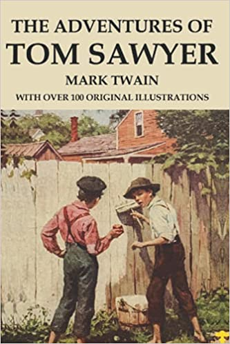
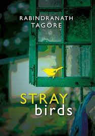

The Adventures Of Tom Sawyer

By Mark Twain
The Adventures of Tom Sawyer by Mark Twain is a fabulous 1876 novel about a young and clever boy growing up in the fictional town of St. Petersburg, along the Mississippi River. The story is inspired by Hannibal, Missouri, where Twain was living. In this fantastic story, Tom Sawyer lives with his Aunt Polly and his half-brother Sid.
Stray Birds

By Rabindranath Tagore
STRAY birds of summer come to my window to sing and fly away.
And yellow leaves of autumn, which have no songs, flutter and fall there with a sigh.
Percy Jackson And The Lightening Thief

By Rick Riordan
The Lightning Thief is a light-hearted fantasy about a modern 12-year-old boy who learns that his true father is Poseidon, the Greek god of the sea. Percy sets out
to become a hero by undertaking a quest across the United States to find the entrance to the Underworld and stop a war between the gods.
Famouse Five : Five run away together

Grind Blyten
Julian, Dick and Anne arrive in Kirrin Cottage to stay with George (real name Georgina) for the holidays. They plan to spend time exploring Kirrin Island but their
happiness is spoilt when Aunt Fanny falls ill and has to leave with Uncle Quentin to be treated in a far-off hospital.